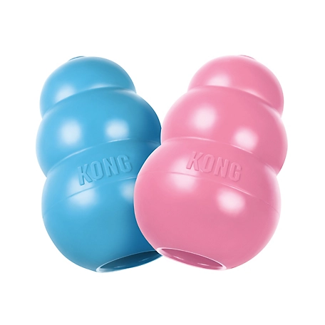
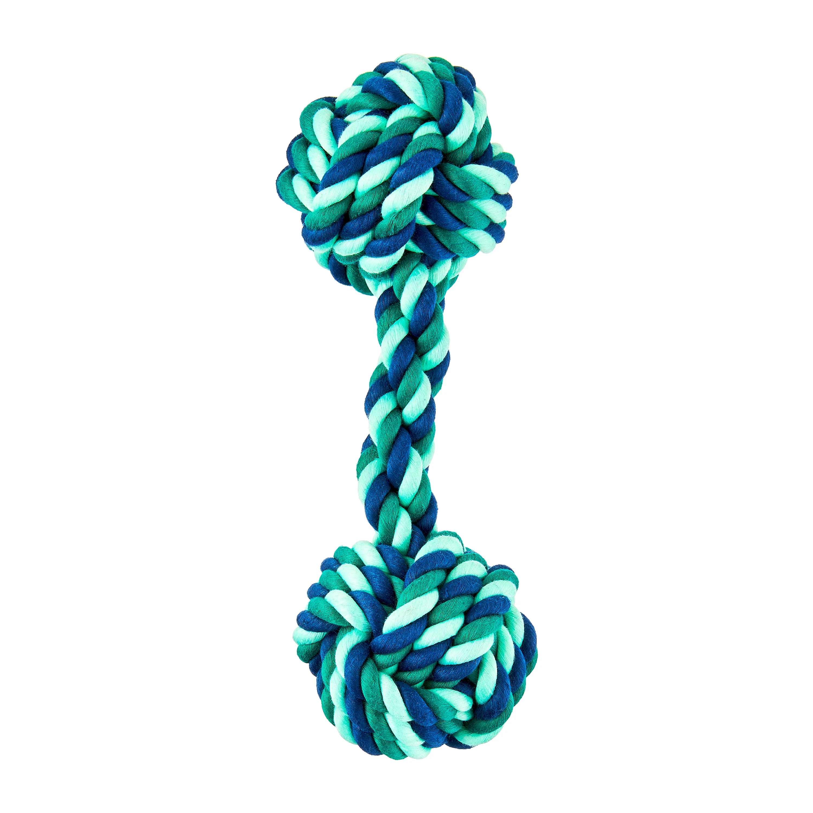
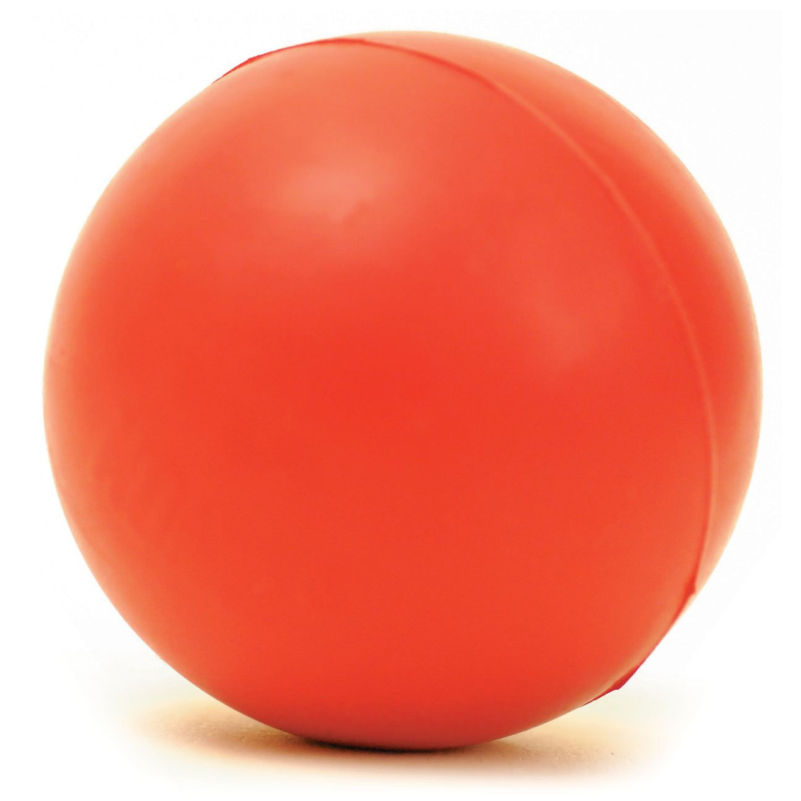
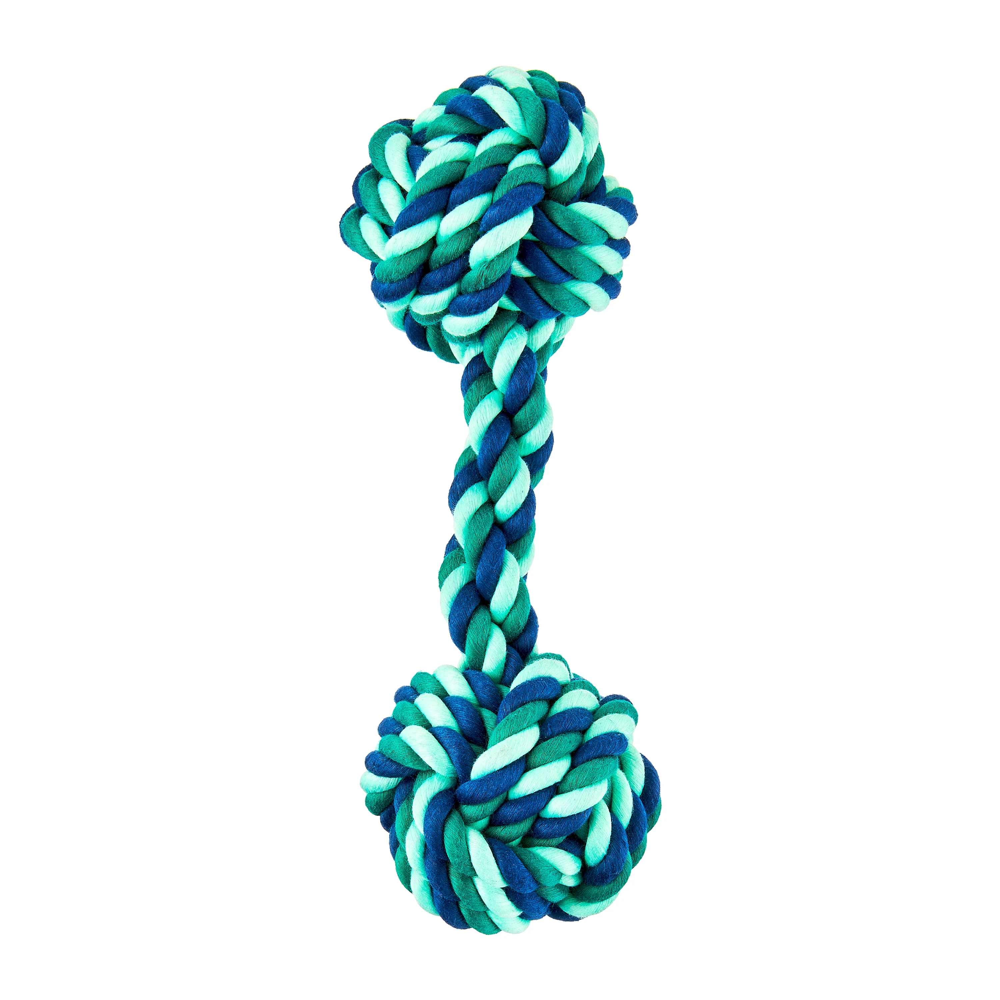
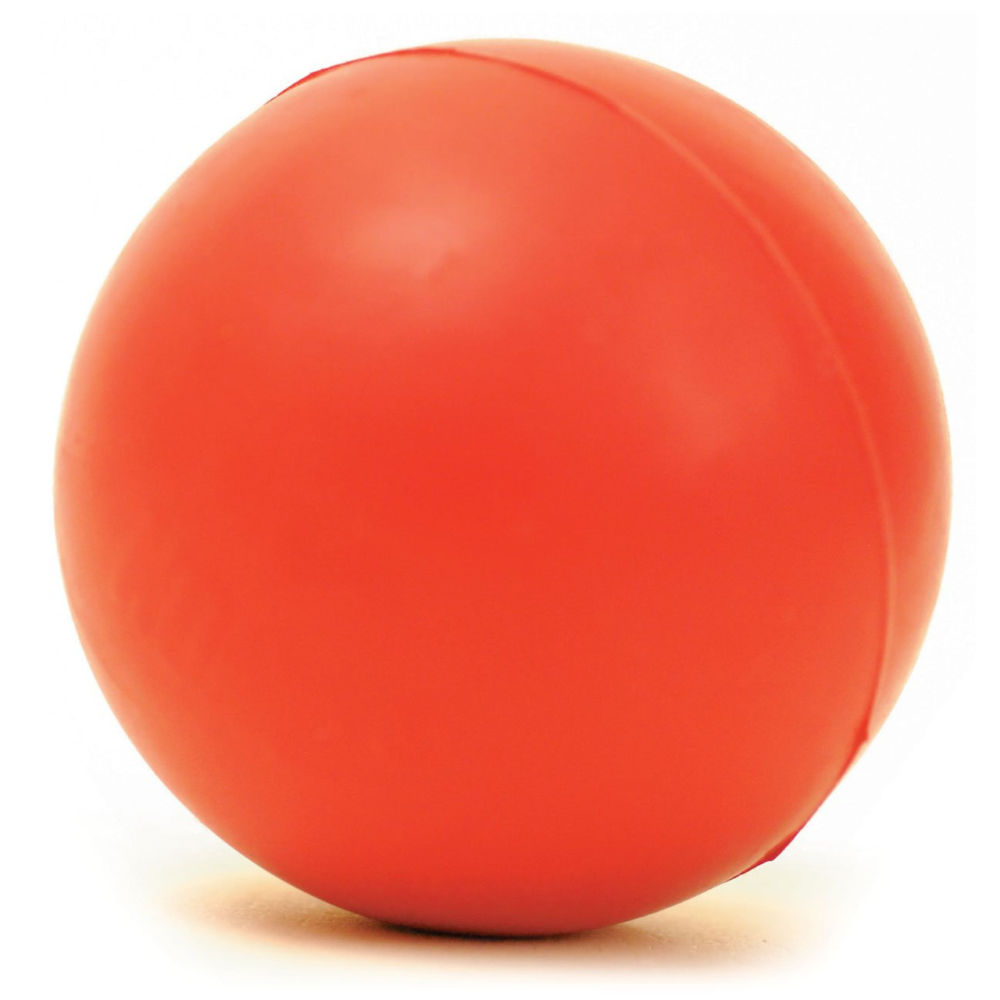

Facts about Max
- He's about 70 pounds.
- He was born in Renton.
- He is the runt of his litter
- He's about 6 years old.
- He's a golden retriever.
Why I think Max is the best dog ever
He may not be the most perfect dog, and he might be a little goofy at times, but he always brings happiness to my family and I. His wagging tail and silly antics never fail to lift our spirits, even on the hardest days. He does not have to be the smartest or the most well-behaved dog. However, his loyalty and love are what truly make him special. That is all he needs to do for him to be the best dog to us, nothing more.
What Max Like's to Do During The Day
He loves to sit at the top of the stairs, barking at anyone who passes by the house. He is the guardian of the house after all! When he decides he wants to go outside, he likes to dart through the backyard and go chasing after the rabbits (He's not very inviting sometimes!). When everyone is home, and he isn't up to his usual antics, he begs everyone to play his favorite games with him. After a long day of being Max, he sleeps with my parents in their bed, tucked in his favorite blanket during the cold Winter months.
Max's Favorite Treats
Max really loves his treats! His favorite kinds of treats to eat are bacon bits or chicken jerky tenders. And sometimes, we toss him a french fry or two when we get McDonalds. He also really likes to eat peanut butter, and sometimes he likes it when peanut butter is on some of his other treats! He doesn't only eat bacon or fries, he also eats carrots and lettuce. He's a healthy dog!
Max's Favorite Toys


 


